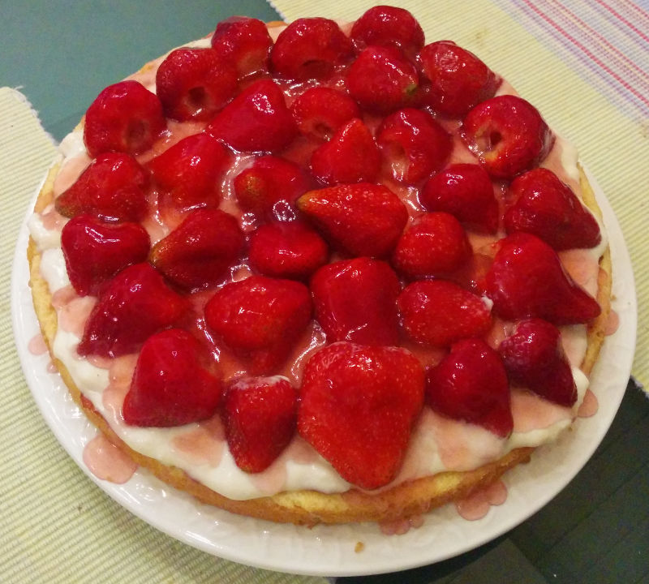

|  | |
| 200g | butter |
| 200g | sugar |
| 3 | eggs |
| 225g | flour |
| ½ tsp | baking powder |
| ◇ | |
| 500ml | milk |
| 30g | corn starch |
| 50g | sugar |
| 1 tbsp | vanilla extract |
| ◇ | |
| 3 tbsp | strawberry jam |
| 500g | strawberries |
| 8g | potato starch |
| 30g | sugar |
| 250ml | fruit juice, or water w/ fruit syrup |
Preheat oven to 360°F.
Whip sugar with softened butter and add eggs one at a time. Then fold in flour and baking powder.
Transfer dough to a well-greased 11" cheese-cake baking pan. Bake for 25 to 35 minutes or until fully set and golden brown.
Combine custard ingredients and stir while bringing to a boil. Let cool to room temperature.
Let cake rest on a cooling rack for about 30min. Coat with strawberry jam and custard. Arrange fresh strawberries on custard.
Combine fruit juice with starch and sugar, and bring to a boil. Let cool for about a minute. Then apply glaze to fruits.
Refrigerate for at least 30min or until glaze has set.
Dough may be prepared and baked a day in advance. Wrap in aluminum foil and store at room temperature.
Substitute other seasonal or canned fruits as available: berries, banana, canned peaches or mandarin oranges, and grapes are all traditional.
If custard is omitted from the recipe, serve with whipped cream instead.